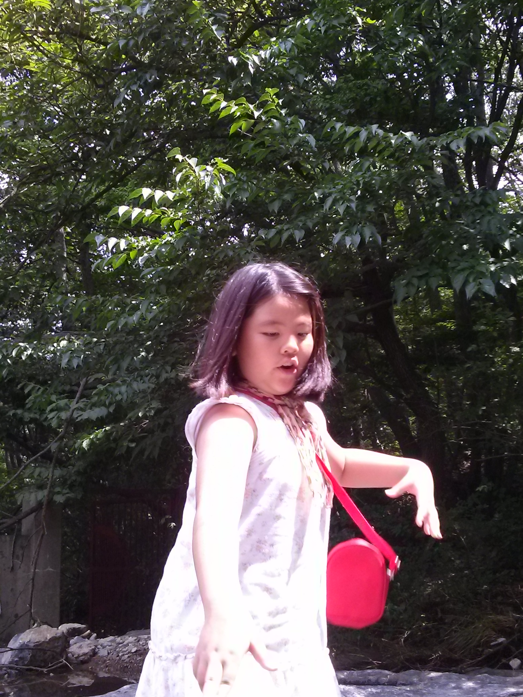

- 배혜인
- 목동열,
- 목희진,
목희진(enfp)
재기발랄한 활동가, 스파크형
따뜻하고 정열적이고 활기가 넘치며 재능이 많고 상상력이 풍부하다. 온정적이고 창의적이며 항상 새로운 가능성을 찾고 시도하는 유형이다. 문제 해결에 재빠르고 관심이 있는 일은 무엇이든지 수행해내는 능력과 열성이 있다. 다른 사람들에게 관심을 쏟으며 사람들을 잘 다루고 뛰어난 통찰력으로 도움을 준다. 반복되는 일상적인 일을 참지 못하고 열성이 나지 않는다. 또한 한 가지 일을 끝내기도 전에 몇 가지 다른 일을 또 벌이는 경향을 가지고 있다. 통찰력과 창의력이 요구되지 않는 일에는 흥미를 느끼지 못하고 열성을 불러일으키지 못한다.
겉보기 특성 - 외향적인 성격이고 사람들을 나름대로 기쁘게 해주며 열정적인 면에서 ENTP와 흡사하나 ENTP에 비해서는 다소 충동적인 몽상가 기질이 보인다.
따라서 본인이 하고 싶은 일이 있으면 뭐든 여러 개라도 벌려놓고 보는 형이다. 특유의 NP형답게 사회적인 틀과 통념에 박히는 것을 지루해한다
